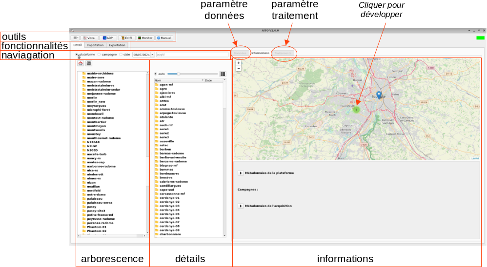

Au premier lancement, aito présente une page vierge.
Aux lancements suivants, aito présente, si possible, la dernière page utilisée.
note : en cas de modification des varaibles d'environnement AIDA_META et AIDA_DATA la présentation de la dernière page utilisée peut être impossible.
La plupart du temps, en positionnant la souris sur un objet graphique, aito affiche une aide (info-bulle).